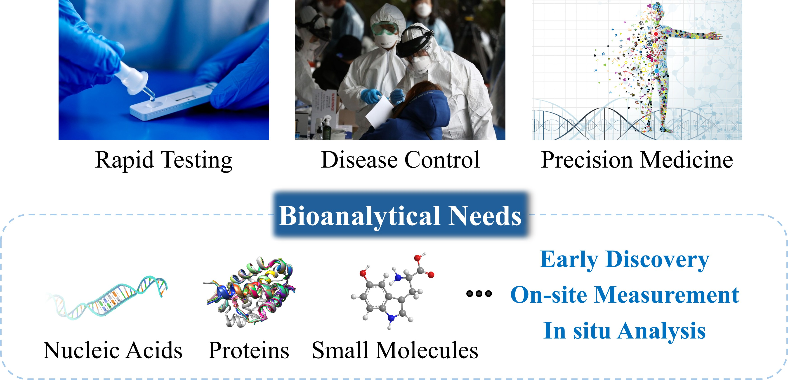
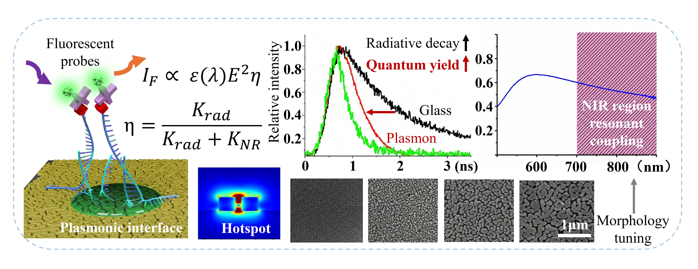
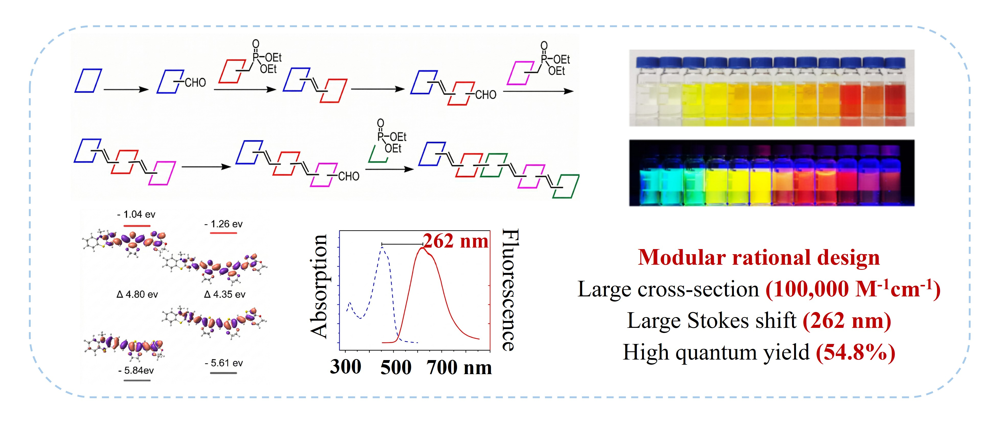
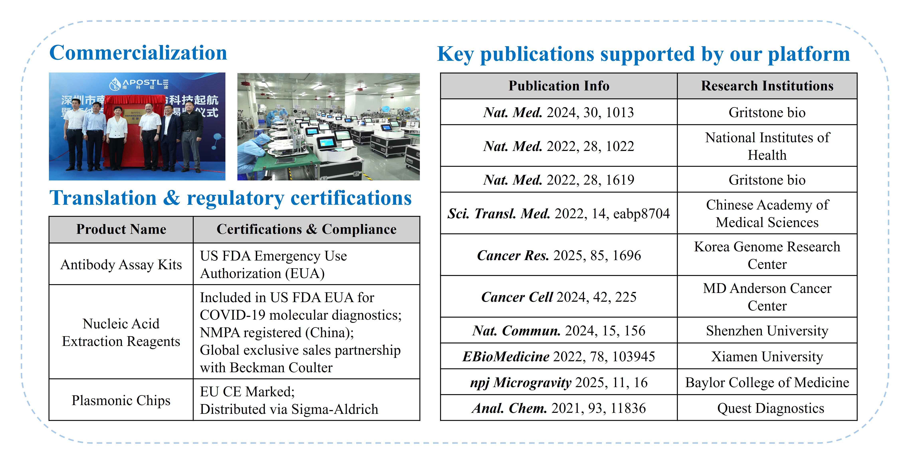
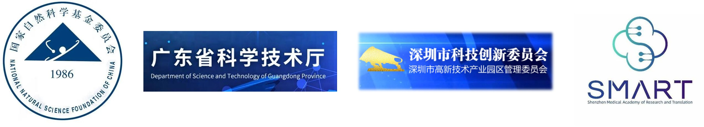

What We Do
Our work resides at the intersection of analytical chemistry, nanotechnology, and precision medicine.
Our core focus is Real-time In-situ Bioanalysis — achieving early, on-site, in-situ, and non-destructive acquisition of biological information. To address challenges in complex biological matrices, limited pretreatment methods, severe signal attenuation, and reliance on sophisticated equipment, we have built a progressive research framework spanning from underlying mechanisms to clinical system applications.

At the signal transduction level, we dedicate our efforts to novel luminescence kinetic regulation mechanisms to break the intrinsic limits of fluorescence quantum yield. This efficiently converts weak biological recognition events into strong physical signals, laying a solid physical foundation for ultra-sensitive detection.

Building upon signal enhancement mechanisms, we explore new chemical labeling strategies. Through rational design and intelligent prediction of probes, excitation efficiency and optical readability in complex backgrounds are optimized, resolving instrumental bottlenecks to ensure signals are both "accurately measured" and "easily read."

High-performance signal systems are integrated into innovative analytical methods, achieving a leap from single-dimensional concentration analysis to multidimensional phenotypic profiling. This completes the transition from laboratory technology to complex clinical applications.

Projects led by Bo Zhang as PI, or obtained by lab members (postdoc / research assistant professor).
Rapid detection and traceability of antibiotic resistance genes using novel nanomaterials
Shenzhen Fundamental Research Fund · PI: Bo Zhang
Multiple nucleic acid amplification-free point-of-care analysis method research and application demonstration
Shenzhen Medical Research Special Fund · PI: Bo Zhang
Amplification-free multiplex nucleic acid detection strategy with photocatalytic proximity labeling and plasmonic material
National Natural Science Foundation of China · PI: Research Assistant Professor
Employment Oriented Teaching Reform for Biomedical Engineering
Southern University of Science and Technology · PI: Bo Zhang
Plasmonic-based Multiplexed Nucleic Acids Detection Platform for Diagnosis of Pathogens
National Natural Science Foundation of China · PI: Bo Zhang
Plasmonic-based SARS-CoV-2 variants detection platform
Guangdong Basic and Applied Basic Research Foundation · PI: Bo Zhang
Carbon Nanotubes/Graphene-based Device for Environmental Virus Detection
Innovative Projects of General Universities of Guangdong Provincial Education Department · PI: Research Assistant Professor
Investigation of Novel Asymmetric Transfer Hydrogenation Catalyst and Implementation in Asymmetric Synthesis of Non-natural Sugar Alcohols and Corresponding Analogues
Shenzhen Fundamental Research Fund · PI: Research Assistant Professor
Magnetic Nanoparticles-based Cell-free Fetal DNA Enrichment from Maternal Plasma
China Postdoctoral Science Foundation · Postdoctoral Researcher
Plasmonic-based Multiplexed SARS-CoV-2 Diagnostic Platform
China Postdoctoral Science Foundation · Postdoctoral Researcher
Novel magnetic nanomaterials for non-invasive prenatal testing
Shenzhen Fundamental Research Fund · PI: Bo Zhang

Grants obtained during industry (Nirmidas Biotech) and doctoral training (Stanford University). Listed for reference.
A Nanoscale Plasmonic-Gold Platform for Specific Diagnosis of Zika and Differentiation from other Flavivirus Infections
National Institute of Health Grant · Nirmidas Biotech
Plasmonic-based multiplexed platform for Diagnosis and Screening of Type 1 Diabetes and related Auto-Immune Diseases
National Institute of Health Grant · Nirmidas Biotech
Nano-Engineered Plasmonic Chip for Monitoring of Novel T1D Biomarkers
Juvenile Diabetes Research Foundation Grant · Stanford University (Ph.D.)
Multi-color Hemagglutinin Peptide Microarray on Novel NIR Fluorescence Enhancing Plasmonic Chips
Stanford Bio-X Interdisciplinary Graduate Fellowship · Stanford University (Ph.D.)
Nano-engineered plasmonic chip for Point-of-Care diagnosis of type 1 diabetes
Institute for Immunity, Transplantation, and Infection Seed Grant · Stanford University (Ph.D.)
A new protein microarray platform on plasmonic gold substrate
Stanford Spectrum Pilot Grant Program · Stanford University (Ph.D.)